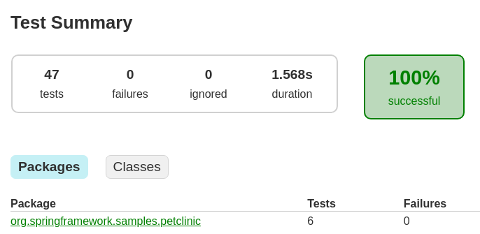
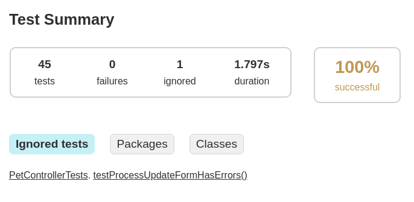

Dissecting Spring petclinic (Part 1)
Test at the boundary
This is the first entry in a series of blog posts about Spring. Make sure to read my entry post before this one.
TLDR
- Blackbox testing can be readable, easy, simple and fast
- It increases fidelity of your tests
- It decouples your tests from any implementation
- Spring is exceptionally bad in supporting those ideas
Levels of blackbox testing
I wrote an extensive post about the many advantages of a testing style that favours testing at the outer most boundary of whatever system you have. For the Spring petclinic, it's clear that we deal with an http api. The http api is the interface for the user, the html is in the end what the system delivers - so what the user is really interested in, is the rendered result in his browser. Ideally, this is what our tests should be based on in order to verify the system from the user's perspective and based on the user's expectations: The rendered result.
Well, how would those tests be created, assuming we apply test-first, so writing the specifications for the system before implementing it? Can someone draw the expected rendering pixel by pixel upfront? No. Well, it would be possible to create the app (or at least route results) skeleton in HTML and CSS, render the reference images and use them for testing. When this is in any way practical, I would at least recommend to try it. In reality however, this is often not available. Also quite common is that the design is only available in some design tool like figma and needs to be translated manually first.
This would have been blackbox testing brought to an extreme - one tiny step behind that comes verifying the exact HTML output (not rendered) by string equality comparison. Since rendering in the browser is more or less (let's not be pedantic here) the same everywhere, we could assume that relying on the HTML text directly is not much worse. But it has the same problem: Where to get it from, when the system is not yet implemented? Not too easy.
We do another tiny step backwards. What, if we only verify for the most important elements in the HTML? For example when there's an owner's page that lists all his pets in a list. Would mean we fetch a route and verify that the HTML contains a headline that contains at least the owner's name and a ul or ol HTML tag with n entries that again contain at least a name. The idea is to also match elements that have additional attributes, styling etc. That looks to be possible, let's set this style of testing as our goal.
NOTE: Creating executable specifications for a system is hard, because you have to strike a balance between coupling and decoupling from details of the system. Is it required to implement a "list" in a html page with standard list tags? No it's not. But it's a good idea to get to this very low level of coupling first, accept it for now and if ever needed, one could still: Replace the concrete assertions in the test with an abstraction or simply adjust the assertions whenever we decide that lists need to be rendered with different html.
Decoupling tests from implementation details
All controller tests in the petclinic project can be rewritten to the above style. Here's an example of how such a test looked:
@Test
void testInitCreationForm() throws Exception {
mockMvc.perform(get("/owners/new"))
.andExpect(status().isOk())
.andExpect(model().attributeExists("owner"))
.andExpect(view().name("owners/createOrUpdateOwnerForm"));
}
At least I had to read carefully what this test is actually meant to achieve. Few things to notice. 1. It uses mockMvc, a test double layer from Spring. This couples the test directly to mockMvc and in consequence the project's implementation to Spring. Keep in mind that people normally don't see it as a problem to couple the app to a framework, as that's how you get the most of it, while the chance the framework is ever changed is very small in practice. 2. The response status is checked, which is a criteria relevant for the user as well - if it's not okay, the user will se an error page in his browser. But the next expectation is again coupling the test to an implementation detail. That the underlying implementation populates something called a model is irrelevant for the user. The same goes for the name that was choosen for the view template the application uses for the given route. Pure detail. 3. What's completely missing is something that verifies the actually important detail the user cares about: What will the page content be when he visits /owners/new? Well, read the above paragraph - maybe we can agree on the fact that the user should see the owner input form.
My version of the test would look like
@Test
void newOwnerFormIsShown() throws Exception {
var httpResponse = get("http://localhost:" + port + "/owners/new");
assertTrue(httpResponse.body().toString().contains("<form class=\"form-horizontal\" id=\"add-owner-form\" method=\"post\">"));
}
while "get" is a utility method that does a simple, real HTTP get to a given path that just hides a bit the uglyness of Java's default HTTP client implementation. What did we gain: 1. No framework is used anymore, this test could target a Rust or Node http application and it would still work 2. No implementation details are relied upon anymore, you could exchange Spring with Ktor and it would still work 3. The user expectation is actually written down, which makes the test's intentation clearer 4. Test is more concise, less noise
Let's take a look at another example. This is how a test looked before
@Test
void testProcessCreationFormSuccess() throws Exception {
mockMvc
.perform(post("/owners/new").param("firstName", "Joe")
.param("lastName", "Bloggs")
.param("address", "123 Caramel Street")
.param("city", "London")
.param("telephone", "1316761638"))
.andExpect(status().is3xxRedirection());
}
- Someone not familiar with mockMvc could think "param" are query params. They are not. Those are form elements. So what the system really does, is processing a posted form. But it's hard to understand it in the given test.
- The redirection is asserted on, but the target of the redirection is not - which is an important thing for the user.
So I rewrote it to
@Test
void postingOwnerFormSucceeds() throws Exception {
var httpResponse = postForm("http://localhost:" + port + "/owners/new", "firstName=Joe&lastName=Bloggs&address=123%20Caramel%20Street&city=London&telephone=1316761638");
assertEquals(302, httpResponse.statusCode());
assertThat(httpResponse.headers().firstValue("location").get()).contains("/owners/" + TEST_OWNER_ID);
}
- Now it's clear that we are dealing with a html form.
- The redirect target is used.
- The enhancements of the first example apply here as well.
NOTE: Kind reminder that there is nothing inherently wrong with using MockMVC. It's a standard Spring tool and when it fits the developer's intention, fine to use it. It's also completely okay to just be aware of the coupling that gets introduced by using it - whenever this coupling is not helpful and maybe even prevents you from progress, you can simply change it. Just like I did it now. I mean it was some work, but it was not that much work. I was able to do it completely in a couple of hours. And I have never before looked at the petclinic. So I would argue as follows: When the decision was made to use Spring, it's best to couple to it wherever it makes sense. One reason is that you should not prepare your code for changes you are sure you will never make, which is true for the given situation in like 99% of the cases. The second reason is, that you can only get the advantages of the framework by... well, leveraging it :shrug. So do it, then.
The downsides?
I will be honest, I don't see a lot of downsides that are worth writing and reading. Instead, I will raise common arguments I was confronted with over the years and comment on them a bit.
"Don't fight the framework"
MockMVC is Spring standard, meant to write tests that deliberately remove the whole network and http stuff from the stack. This reasoning alone seems to be sufficient for people to see it as the way to write those tests. People will often tell you not to fight the framework - even though you don't really have to fight the framework in any way, as the regular SpringBootTest is also officially from the framework, but yeah. Additionally, people will tell you there is a need to exactly test implementation details like above shown with the model and view. They don't see the resulting coupling as a disadvantage and necessary, because otherwise "not everything is tested enough". Remember, I am just repeating here what I was told by colleagues over the years when I asked them for their reasoning. Even when you don't consider switching frameworks, it could be very well be a good idea to write the tests like I did it here.
It's slow!!
"You can't do those tests because they are too slow!" is what people told me. Like in my older post, this is an argument often raised. Yet a) it has close to never any relevance and b) it is either not proven or as I showed, can be disproven.
Completely unscientific, I just ran all the tests multiple times like they were before and after I converted them on my local machine. Not the most accurate approach, but you probably won't get any other data, so... Keep in mind that I changed all the tests touching any controller to use the whole application, just as you would run it on production. Inlcuding a complete postgres database instance (per test class) via docker, which is started and stopped per test class. The result:
Before: 
After: 
The ignored test is one I wasn't able to accurately convert. The missing one was not needed anymore (I think). So we see a difference of - let's be generous - 250ms. Or around 15% slower tests. But I could remove at least 1 further test because it's 100% redundant now. And that's it. This is your chance to win the argument that one style is slower than the other. This is the overhead we're talking about nowadays. On the plus side, I enhanced the fidelity of every single test, removed all the coupling to a framework and removed 250 lines of code which looks like it is 50% of all the test code.
Multiple tests could also get collapsed into a few selenium (or similar tool) based tests. You need those click tests one or the other way around, so why not removing redundancy in addition.
A word on @SpringBootTest
When testing a Spring project, there is this elephant in the room that silently guides all the actions you do and subtly drives all your design. The di container centric design of the framework - it dictates how you write tests. The more I think about it, the more I see that this was actually one of my biggest complain in most Spring projects and also took the biggest influence on the actual design of the overall code (for the worse).
Why does your app or framework at all need extensive integration into an already versatile testing framework like JUnit? Have you ever seen a test that starts a Spring application without @SpringBootTest? Is it possible? Sure. Is it easy to do? No. Because all the configuration, all the components are implicitly wired together and you have to basically try-and-error what context and config you need in order to get the stuff to start. Compare that to explicit constructor calls and you will see the difference. Of course you can't do that anymore when you already have 823472649 barely meaningful tiny parts that rely on getting injected all into each other (combined with Java, a language without named parameters and default parameters ...). This is a consequence of the framework architecture. It led to the necessity of those test support annotations, which can only be applied on the class level, because booting the whole container is so resource intensive, that you are expected to reuse a container between tests. Or that you don't boot a whole container at all but only a slice of the whole application. Again, this is a consequence of the architecture. In an ideal world, the developer shouldn't have to care about the "slices" of the application in order to test it. And there are quite a lot of those test annotations that you now need to know, @DirtiesContext being probably the most beloved one, right? And a lot of details to understand.
Of course those annotations lead to yet another consequence; because annotations are static, you can't really abstract over them. How to pass in configuration values into a test, for example? Through the annotation. But when they are only known at runtime, because you need to configure a mapped database port? Here's another support annotation for you, @DynamicPropertiesSource. But oh, this needs to be a static method. So yet again, you cannot abstract over it - you can see a limitation in my commit here, which leads to the necessity to declare testcontainers over and over again in the test class body, instead of putting them into the base class and using JUnit's excellent support for afterAll methods that are non-static.
How do you get a value from your application, like the port it's using? You guessed it, another special annotation you need to know and which only works when you passed the correct environment configuration parameter to the other test support annotation at the same time.
We must realize how deep in the rabbit hole we alread are. Let's take a look at how simple, explicit bootstrapping of a web application can look like:
public static void main(String[] args) {
var app = createApp(new NoteRepository.InMemoryNoteRepository());
app.start(7070);
}
public static Javalin createApp(NoteRepository noteRepository) {
return Javalin.create()
.get("/notes/{id}", ctx -> {
var id = Integer.parseInt(ctx.pathParam("id"));
Optional<Note> note = noteRepository.find(id);
note.ifPresentOrElse(ctx::json, () -> ctx.status(404));
})
.get("/notes", ctx -> {
List<Note> notes = noteRepository.getAll();
ctx.json(notes);
});
}
And a test
@Test
void existingNoteIsFound() {
NoteRepository repository = new InMemoryNoteRepository();
repository.addAll(new Note(0, "asd"), new Note(1, "ftz"), new Note(2, "jek"));
JavalinTest.test(createApp(repository), (server, client) -> {
assertThat(client.get("/notes/2").code()).isEqualTo(200);
});
}
that would trivially allow to abstract over bootstrapping a whole container per test (method!!) and runs it in miliseconds or seconds.
What I have observed is, that developers won't do things that have bad ergonomics. And rightfully so, I must say. Colleagues of my had refused to use testcontainers alltogehter, because of the amount of boilerplate they had to apply to their Spring tests, unable to properly abstract it away. They refused to do blackbox testing because of the resource consumptions the framework brought with it, while rubbing mocking in their faces made the decision easier. I see that as a big issue.
Verdict
All the changes I made in this first step are available in this commit.
As motivated in this post, testing is such an important aspect of our work. Maximizing fidelity of tests and testing at the outer most boundary of your app is crucial for good projects. Yet, Spring doesn't do much to help us achieving that. The opposite is the case. The whole framework's testing support is focused on providing bandaids for the performance hit the framework imposes and the architecture principles, that don't work well with native language constructs like lambdas.
For me, this led to projects where sliced test contexts got so complicated that it was a pain to alter any component's dependencies in the project, because there was always some test that broke because of missing declarations. Where developers gave up on using more than a single database container, declaring it "impossible to use", but it seemingly didn't matter, because it was also declared as "too slow". Oh and doing tests including http and/or networking was also declared to be too slow. Leading to the vast majority of tests being of low fidelity and coupled to implementation details and Spring framework details. Or to components that worked in the tests, because there was a @Transactional helper annotation, but in staging environment, the application threw an exception and was unusable.
I am quite satisfied how little time it took me to convert existing tests in the petclinic to blackbox tests, how they look like now and how they perform. The limitations Spring imposes on your testing style became somewhat clear by that. Even though many of the challenges I encountered in professional projects didn't show up - probably because petclinic is too small of a project.
In my next entry in the series, I will probably write about adding some additional tests to the project. I could think of some selenium (or playwright or whatever is cool nowadays) tests and some snapshot tests - the latter ones will protect me from doing any observable changes, even when I change the whole rest of the project's implementation - who knows if that's not exactly what I will do when I have some spare time available in the future.
CHANGELOG: 29.12.2024 - Added reference to intrduction post